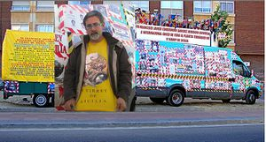
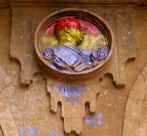

Mancasala
 De: La Frikipedia, la enciclopedia extremadamente seria.
De: La Frikipedia, la enciclopedia extremadamente seria.
| De la serie ciudades del mundo:
|
| Salamanca City Planet
|

|

|
| (Bandera)
|
(Escudo de armas)
|
|
| Topónimo oficial
|
Mascasala
|
| País
|
España para algunos, Castilla para otros, León para ellos, Garrido para mí
|
| Código postal
|
37000
|
| Superficie
|
45% del territorio Leonés
|
| Altitud
|
865
|
| Distancia
|
1 Hora desde Portugal
|
| Fundación
|
Cuando se fundo la Universidad
|
| Población
|
Guiris: 30.000; Canis: 4000; Charros: 150.000; Escoria en torno al 70%; Guarras 85%
|
| Gentilicio
|
Charro
|
| Alcalde
|
Alfondo Fornández Muñeca
|
| Había una universidad...
|
En. Charros Ville, términos en desuso. También conocida como Charrajevo. Alcalde
Julián Lanzabotes perpetuo desde 1995 a.c, actualmente reencarnado en un tal Mañueco. Se cree que con el tiempo,la cara del alcalde tendrá un hueco entre los medallones que pueblan la Plaza Mayor de Mascasala.
Salamandra , forma parte del [País Leonés] compuesto por otras 3 provincias de:
Ciudad de Aquí poblada por charros y guiris. Aunque la etnia predominante es la de los guiris, la más peculiar y característica es la de los charros.
Desde tiempos remotos los Salmantinos han odiado a Pucela y a sus gentes de forma acérrima e incondicional. La rivalidad viene desde muchos años atrás remontándose a la fundación de Fachadolid pero jamás se sabrá el origen de ella.
Los charros son gente baja (de altura) y desagradable (de carácter). Entre los charros la carencia de fe resulta molesta. Su principal ocupación es hacer ruido, aunque también hay una gran parte de la población dedicada a molestar a los demás.
Los guiris se distinguen del resto de la población mancasaltina por su estatura, buen porte y amabilidad. Sus ocupaciones varían, la mayor parte se entretiene en molestar a los demás aunque una gran mayoría también hace ruido.
Ambas etnias, charros y guiris, comparten horario, siendo este nocturno para la mayor parte de sus ocupaciones. Los visitantes se quedan prendados de la hospitalidad de ventas y hoteles en los que por un impúdico precio a duras penas te invitan al café después del clavo.
Gobierno
La forma de gobierno es la dictadura parlamentaria. Da igual a quien votes año tras año nuestro querido alcalde Julián Lanzabotes sale elegido por mayoría absoluta. Se cree que el 69% de sus votos provienen de personas viejas. El 20% de amas de casa. El 10% de gente que coge las papeletas al azar. Y el resto de origen desconocido.
«Si Lanzarote lo hace todo mal ¿Por qué lo sigue votando? »
~ Persona anónima preguntando
«Lo voto porque si ostias ¡Viva España! »
~ Charro profundo opinando sobre Julián Lanzabotes
Dicen que para el año 2550 terminará su mandato y que por entonces se reunirá con Fraga y los grandes lideres del PP:
Normas de tráfico
Dentro del dominio municipal y provincial destaca la gran diferenciación con las normas de tráfico con el resto de la Unión Europea, algunas de las normas son:
- Un semáforo en ámbar está en verde.
- Ante un semáforo en rojo, se acelera.
- Ante dos semáforos en rojo, se aplica la norma anterior dos veces.
- Si ante nuestro vehículo se detiene alguien por un semáforo en rojo, una señal de stop o un ceda el paso, se le adelanta preferiblemente por el arcén de la derecha.
- En el supuesto anterior, si no hay arcén suficiente a la derecha, se invade el carril contrario o se pisa la isleta de la mediana.
- En el supuesto anterior, si no se puede pasar de ninguna manera, se utilizará el claxon y se berrearán suposiciones sobre los lugares y trabajos que frecuentan los progenitores del conductor del vehículo que nos precede.
- Las rotondas son lugares donde los demás tienen que huir de mí.
- Yo, y sólo yo, tengo preferencia en un cruce en el que confluyan 4 vehículos al mismo tiempo aunque varias señales verticales me indiquen lo contrario.
- El intermitente esta de adorno es el coche, cualquiera que lo use dentro de este territorio se considera sacrilegio.
Destacable también es el hecho de que los permisos de conducir se expiden a cambio de seis tapas de yogur y un sello de treinta.
Economía
Su economía se caracteriza principalmente por la ganadería entre cuyos principales exportadores están la Universidad Pontificia de Mancasala, y la Iglesia Católica.
El Corte Ingléses otra de las grandes fuentes de riqueza de la ciudad. A pesar de que el dinero se vaya fuera el barrio de Garrido tiene la desgracia el honor de alverlgarlo. Se cree que con el afán de encontrar trabajo media ciudad y gente venida de lejanos lugares se presentaron al casting la selección que llevo acabo el supermercado. Actualmente la gente abarrota el Centro comercial. La población va a calentarse a comprar en cantidades industriales gracias a los bajos precios del mismo.
Los turistas son otra fuente principal de negocio. Por las calles del centro salmantino se pueden distinguir varios tipos de ellos:
- El guiri viejuno: Se caracteriza por ir siempre con pantalones cortos y calcetines hasta las rodillas en verano. En invierno se suelen caracterizar por sus chubasqueros.
- El guiri jóven:
- Mozos: Suelen tener los mofletes rojos debido en pare a su característica piel y en otra a las borracheras (a.k.a botellones.
- Mozas: La mayoría son rubias y casi siempre llevan faldas cortas y amplios escotes. Los mozos charros suelen soltar halagos a su paso del estilo de "Donde vas con esas carnes" o "Te cogía y..." .
- Japos: Este genero suele englobar a orientales de todo tipo. Suele poblar las calles de la ciudad y van en
manadas grupos numerosos. Sacan fotos a cualquier cosa y todo le parece digno de admiración.
- Madrileño: El turista madrileño suele venir los fines de semana o vísperas de festivos. Se caracteriza pensar que Salamanca es un pueblo y asombrarse de todo."¡Oh tienen Burger King!", "¡Oh pero si tienen centros comerciales!", "¡Oh si tienen agua corriente!"
"¡Oh si tienen putas!"
- El que pasaba por allí: Suele venir de paso por la ciudad y lo que menos le importa es donde esta si no las copas que bebe y las mozas que consigue. Se le suele ver por la calle Toro o Gran Vía los Sábados a las 8 de la mañana desorientados.
Otros negocios destacados son el alcohol para ganado y los enchufes con jamón.
Sociología de la ciudad
Las gentes de esta ciudad están enfrascados en una dura lucha que lleva sucediendo durante cienes y cienes de años. En esta cruenta batalla hay dos bando principales.
- Los viejunos: destacan por su afición por mirar las obras, su aversión a cualquier cambio y su obsesión por la limpieza.
- Los jóvenes: sus principales bazas son, la capacidad de dormir en sofás en habitaciones donde diez personas han hecho botellón, afición por los colores llamativos y por una substancia marrón que se fuma, así como ir a Tui a ser violados.
Tras muchos años parece que los viejos están derrotado definitivamente a los jóvenes. Han Organizado un ataque a tres bandas, primero acabaron con cualquier puesto de trabajo cualificado que hubiese en la ciudad, después consiguieron subir el precio de la vivienda lo suficiente como para que ningún jóven pudiera comprase una casa y por último remataron prohibiendo los botellones.
Así poco a poco la ciudad se queda inexorablemente sin jóvenes y los viejos lograrán el paraiso terrenal (se estima que eso ocurrirá cuando la edad media de la ciudad ronde los 70 años).
Raza Autóctona: Los Charros
Charro o charrasco es todo aquel que ha nacido, ha vivido y ha muerto en Salamanca city. Tras un periodo de observación de varios años (cuatro, los que dura una licenciatura), me he percatado que podemos clasificar a los charros aquí habitantes.
- Charro profundo: Es aquel charro rancio. Normalmente es conocido por el charro-tengo-tierras o el charro hecho a sí mismo. Este charro posee una ideología política semejante a nuestro glorioso caudillo. Cuando pasan por la Plaza Mayor, saludan al medallón oportuno levantando la mano, y retiran la pintura roja/ketchup tirada por un perroflauta estandar. También se puede entender por charro profundo como aquel que anteriormente fue un charro-andy y lucas o un techno-charro(suelen pregrinar al Skorpia de Burgos o A Cañiza). Se caracterizan por pronunciar un graznido que pretende ser "ayyy mi niññaaaaaa" o algo similar, pero nunca se le logra entender.
- Charro andy y lucas: De mediana edad, o jóven. Posee un tocado-corte-de-pelo tipo cenicero. Se cree que la gomina ha absorbido sus cerebros. Normalmente poseen un coche tuning, modelos favoritos: León amarillo. Abundan por los barrios de la periferia, realizan carreras de coches por calles céntricas. Dentro de sus vehículos, o bugas, a gusto del consumidor suena musica agradable. Se pueden diferenciar de los techno-charros por la música que tienen en el coche. Presenta gran similaridad con los canis.
- Techno-Charro: El bacalao de charrajevo. Similar al anterior.
- Charro-dijo: Un charro profundo-tengo-tierras jóven. Si es hembra, pasará repetidas horas en centros Spas con su madre progenitora. Además acudirá a diversas tiendas. Actualmente abundan por facultades como las de economía y empresa, o derecho, por mencionar sólo algunas. En caso de ser macho (charro-piojo-macho) tendrá ideas políticas de derecha, al igual que su padre. Le acompañará a actos sociales tales como los toros o vaquerías.
- Tano-Charro: Gitano y charro. Se llevan bien con los andy y Lucas y los Techno-Charros. Son los proveedores de la sustancia marrón.
- Charro-que-no-parece-charro: Son pocos, y salen de su ciudad para espiar y recopilar información, se cree que son agentes que preparan la invasión charra de 2015, que anexionará Portugal y buena parte de fachadolid.
- Viciao-Charro: Se pueden contar con los dedos de una mano.Su carácteristica principal es que su vida esta basada en jugar a un juego muerto de la psp llamado Monster Hunter, juego que no tiene modo historia y no tiene argumento
Charros célebres
 (La furgoneta del V Virrey de Sicilia cuando aun conservaba las banderas.)
Con su furgoneta empapelada de recortes de periódico, reivindicando sus derechos como heredero único de todo el planeta.La leyenda dice que en alguna ocasión trabajo de carnicero, y que se le suele ver por un bar del Paseo de la Estación (Carlos III).
[El V Virrey de Sicilia en: Vidas anónimas La Sexta Parte1 ]
[El V Virrey de Sicilia en: Vidas anónimas La Sexta Parte2 ]
- El mendigo de la hamburguesa: que va pidiendo con voz de ultratumba "una ayuda para comprarme una hamburguesa, tengan compasión por favor".
[El mendigo de la hamburguersa grabación inédita]
- Rafa JB: uno de los más fieles seguidores de la Unión Deportiva Mancasala, siempre con su San Pancracio colgado del cuello.
- El hombre que no le compra nadie: Es el dueño de la tienda Dtbos, se caracteriza por su enorme barba y pachorra y por no recibir cliente.
- Bigote: su trabajo consiste en seguir a la gente , paga a la gente para que se hagan sus amigos.
- El hombre que no para de pegar hostias a las cabinas de Teléfono: esa es su misión en la vida lanzar el teléfono contra la cabina a ver si sale dinero, están todas reventadas de las ostias que le zumba
- El palomo: Semidiós casi comparable a Chuck Norris y con sus mismas habilidades
- Chuchi Chustas: personaje pintoresco y de gran corazón, que aparecerá en cualquier local rockero de la ciudad de entre la nada cuando te enciendas un canelo espetando: "Me dejas unos tiros luego, me dejas, yo te lo digo, tu lo sabes, tu lo sabes" mientras enseña su pupa marrón del dedo gordo formada tras tanta chusta agarrada.
- Juanele que no es Juan Blanco, y que se dedica a hablar de Naruto y del WoW con toda persona que se le acerque, aunque sea simplemente para pedirle la hora. Últimamente se ha reformado y ha comenzado a estudiar, por lo que ya solo juega 14 horas al WoW, habiendo bajado su posicion por debajo del 100.
- Waninkoko: hacker de la Wii ultraconocido en el mundo de Internet . Solo hay que mirar en Google. La gente suele confundirlo con un pokemon. Suele estar navegando por los foros pero poca gente lo ha visto por las calles de la ciudad. La leyenda dice que muchas mañanas puede versele por la Facultad de Ciencias.
[Waninkoko en teknocosolas.net entrevista al hacker]
Leyendas urbanas sobre el:
-Waninkoko es tan famoso que tiene el gran honor de aparecer en la Wikipedia. Se dice que si ves un ordenador con Linux es por qué Waninkoko estubo allí.
-Si buscas en google Waninkoko aparecen 148.000 resulados.
-Waninkoko hackeo la página web del pentágono.
-Waninkoko viajó en el tiempo hasta la Salamanca de 1936 para intentar asesinar a Francisco Frasco en plena Plaza Mayor. Cuando descubrió que no habia Internet se largo.
[1]
[2]
- El Mariquelo: este hombre mitad humano, mitad Catedral nueva de Mascasala, para dar gracias al señor porque no hubo ninguna víctima en el terremoto de Lisboa sucedido tiempo atrás.
- El M'ayudan: hombre que va recitando siempre la misma frase: M'ayudan pa comprar un bo ca di llo que tengo anvre, tengan con pasion por fabor
- El Tuno Negro: El Tuno Negro es el super-heroe Salmantino por escelencia en los últimos tiempos se modernizo y paso a llamarse -El Vengador Charro-.Se dice que intento aparecer en escena en la Nochevieja Universitaria Salmantina del 2009 intento llevarse de forma fallida a Zamora. Finalmente no hizo aparición pero se cree que volvera a aparecer próximamente...
- Los guardaespaldas de Julián Lanzarote: Nadie conoce sus verdaderas identidades solo se sabe que estan muy unidos a nuestro caudillo y que incluso se les llego a reconocer como relación estable pero actualmente se ha desmentido. Se les suele ver pasear de la mano por la Rua.
- El Churrebolo: Friki Salmantino que empezo a hacerse famoso hace años en Internet con el sobrenombre de "Tronchacabras". En diciembre de 2009 empezaron a aparecer una serie de vídeos en YouTube en el que este personaje aparecia bailando.Con la fama subida a la cabeza el Churre se dedico a hacer practicamente cualquier cosa con el fin de conseguir visitas.
Costumbres Salmantinas
 Medallón esculpido en honor a Francisco Frasco situado en plena Plaza Mayor de Salamanca. Mantenido y restaurado por nuestro Caudillo Julián Lanzabrote, sirve para alejar a perroflautas
- Piropear a las mozas casaderas.
- Llegar tarde a todos los lados.
- Tirar botes de pintura al medallón de Franco.
- Limpiar la pintura del medallón de Franco.
- Organizar fiestas en cualquier lado.
- Montar Nocheviejas Universitarias todos los fines de semana.
Equipo de fútbol
Como no podía ser de otra manera, la ciudad de Mancasala poseía un equipo local, la Unión Deportiva Mancasala. El 18/6/13 (vete a saber tú porqué) el equipo desapareció; ya que la U.D Mancasala no pagaba a sus mankos.Fíjate tú por donde de lo que me alegro, ya que eran una mierda que sólo metían goles en propia
Equipo de Baloncesto
El Perfumerías Avenida ha llegado a lo más alto dentro del Baloncesto femenino incluso a mover más a la aficción que la Union Deportiva Mascasala. A pesar de ello siguen jugando en el pabellón Waisburg con mucha menos capacidad que el gran Multiusos. Como su nombre indica suele usarse para todo menos para lo que es.
Monumentos , barrios y pueblos destacables
- San Jose: Lugar donde habitan Tano-Charro por millones.
- Garrido:7 de cada 10 habitantes de Mascasala viven en Garrido.
- INCYL: Límite fronterizo con Teruel en la Huerta Otea.
Apagón analógico en Salamanca y alrededores
El 3 de Abril del 2010 llego el apagón a Salamanca. Pero para muchos ciudadanos de centro católicos apostólicos y romanos llego días antes. Con la caida de la señal de Telemadrid.
Estos indignados corrieron en masa para revisar que este canal tan plural se siguiera viendo en tierras charras pero por desgracia no estuvieron respuesta alguna de nuestro alcalde.Que al parecer estaba ocupado en otras cosas...
Horas despues las tiendas de televisores electrodomesticos se colapsaron de viejunos que querían comprar un TDT.
Cuando encendieron la pantalla descubrieron un numero nuevo de canales ilimitados que daba lugar a nuevas posibilidades y un gran canal que sustituirá a al gran Intereconomia.
Leyendas sobre Telemadrid en Salamanca: En la frecuencia 41 del UHF en TDT se puede sintonizar:
Testimonios:
«Es cierto se ven! y en HD flipa flipa! partidos en HD! »
~ Virrey de Sicilia
«¿Qué día decís que ha sido el apagón?»
~ El Churrebolo
«En el pueblo tengo todos los canales son 16»
~ El Churrebolo
«Yo con la parabólica con combo TDT, el Digital Plus, Gol TV y mi tele de plasma de 100 pulgadas tengo suficiente...Artur! pasame las palomitas y enciende el Home Cinema! este café esta frio! »
~ Julián Lanzabotes
Fiestas y celebraciones charras
- Botellon:(todos los dias del
ano año a cualquier hora)
- Lunes de aguas: celebración salmantina que consiste en ir a la Aldehuela a emborracharse y pillarse un coma etilico celebrando que las putas cruzaban el rio.
- Pegar
pollazos gritos por la calle.
- Las aguedas: Cientos de mujeres venidas de lejenas tierras (Santa Marta de Tormes)vienen a hornar a nuestro caudillo.
¿Sabías que...?
- El doblador de Homer Simpson nació aquí?
- El alcalde no existe como tal solo es un holograma manejado por Franco.
- El Tuno Negro se pasea por las calles de Garrido City cada noche ayudando a los ciudadanos.
- El Alcalde tiene 2 guardaespaldas a su servicio y a la policía local al completo...
- El mendigo de la hamburguesa tiene casa y gasta todo su dinero en tabaco...
- El palomo perdió su casa tras un desahucio...
- Nintendo cerro la web de Waninkoko por piratería. Actualmente millones de usuarios de todo el mundo de Wii usan las aplicaciones de este hacker Salmantino.
- El Alcalde se va
de putas con tu madre y se gasta todo el poco dinero que hay en esta ciudad?
- El Alcalde es amigo intimo de Aznar
- El 90% de los habitantes de Garrido son inmigrantes o exiliados.
- El 78,9% de la población Salmantina odia a muerte a Valladolid.
Referencias
- ↑ [1]
- ↑ [2]
Enlaces sobre Salamanca
Autor(es):
- Fordus
- Charro
- JacintoCanek
- Aque
- Azulejos
- Rager
- Dny alpha
- Cibercrank
- Harissz
- AlemanH
Frikipedia 2005-2016, Licencia
GFDL 1.2 - Extraído por FrikiLeaks